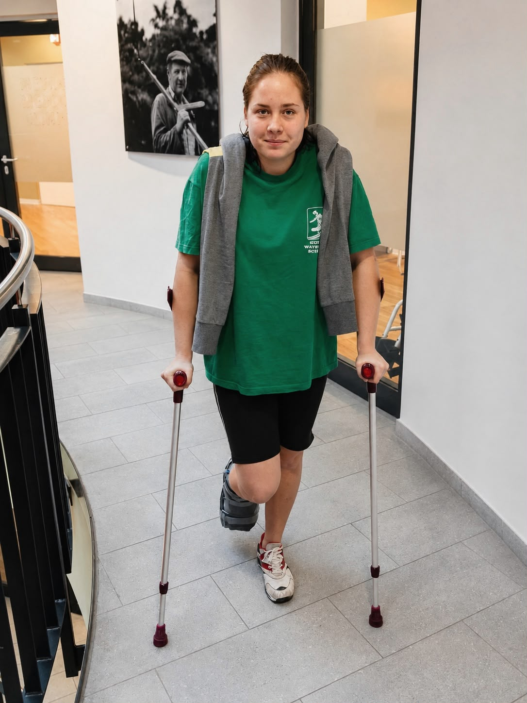
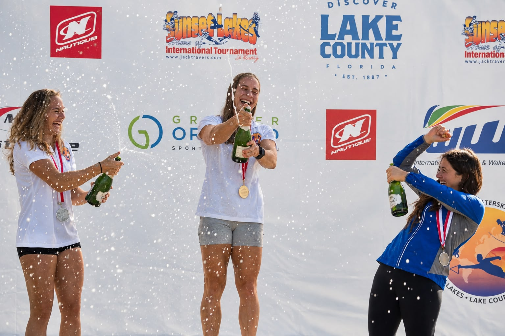
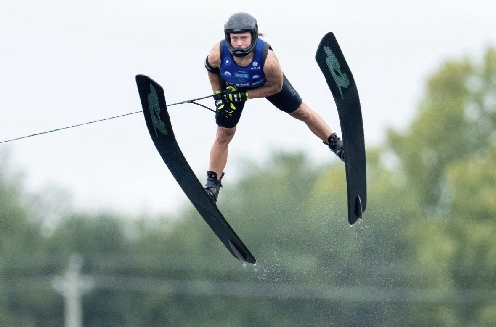

История Анны
От костылей — к мировому рекорду
После серьёзной травмы Анне предстояло лечение и восстановление в Германии. Благодаря многолетнему опыту работы с немецкими врачами и знанию их специализаций я смогла порекомендовать Анне подходящего ортопеда и организовать дальнейшее лечение.
Анна вернулась в большой спорт, стала чемпионкой мира в 2023 и 2025 годах и установила мировой рекорд в многоборье.
Спортивные достижения — заслуга самой Анны, её тренеров и команды.


